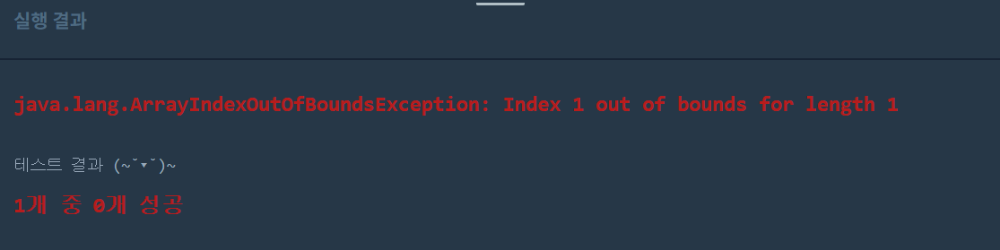
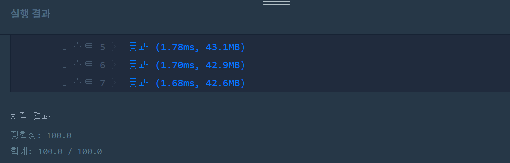

문제
https://programmers.co.kr/learn/courses/30/lessons/42748
( ᐛ )و 첫 번째 도전
1. 설계
- commands를 순회하면서 새로 만들 배열의 길이, 범위를 확인한다.
- 새로 만든 배열 cutArray에 값을 넣고 sort한다.
- 특정 인덱스를 리턴한다.
2. 구현
class Solution {
public int[] solution(int[] array, int[][] commands) {
int[] answer = {};
answer=new int[commands.length];
int[] cutArray;
int start,end,idx=0;
for(int i=0;i<commands.length;i++){
start=commands[i][0];
end=commands[i][1];
cutArray=new int[end-start+1];
for(int j=start;j<=end;j++){//새 배열 생성
cutArray[idx]=j;
idx++;
}
answer[i]=cutArray[commands[i][2]];
idx=0;
}
return answer;
}
}
3. 결과
 실패. 배열이 인덱스 범위를 초과했다.
4. 문제점
문제에서 배열을 1부터 세기 때문에 start와 end에서 1씩 빼줘야한다. 두 번째 for문 범위도 이상하고, j가 아닌 array의 값을 넣어야한다. 배열 정렬도 하지 않았다.
( ᐛ )و 두 번째 도전
1. 설계
- 새 배열을 생성한 후 sort한다.
2. 구현
import java.util.Arrays;
class Solution {
public int[] solution(int[] array, int[][] commands) {
int[] answer = {};
answer=new int[commands.length];
int[] cutArray;
int start,end;
for(int i=0;i<commands.length;i++){
start=commands[i][0]-1;
end=commands[i][1]-1;
cutArray=new int[end-start+1];
for(int j=0;j<cutArray.length;j++){//새 배열 생성
cutArray[j]=array[start];
start++;
}
Arrays.sort(cutArray);
answer[i]=cutArray[commands[i][2]-1];
}
return answer;
}
}
- int[] cutArray: 조건에 맞게 자른 배열이다. 배열 크기는 변하기 때문에 크기 선언은 for문안에서 한다.
- int start: array의 i번째 인덱스를 저장한다.
- int end: j번째 인덱스를 저장한다. start와 end는 배열을 1부터 세기 때문에 1씩 빼서 0부터 시작하도록 한다.
3. 결과
 성공٩(˘◊˘)۶
해결 완료!
쉬운 문제였지만 잔실수가 많았다. 인덱스 번호를 틀린다거나, 정렬을 하지 않았다거나. 이런 실수를 줄일 수 있도록 코드를 바로 작성하기전에 어떻게 구상할지 머릿속으로 정리를 하는 단계를 습관화해야겠다.